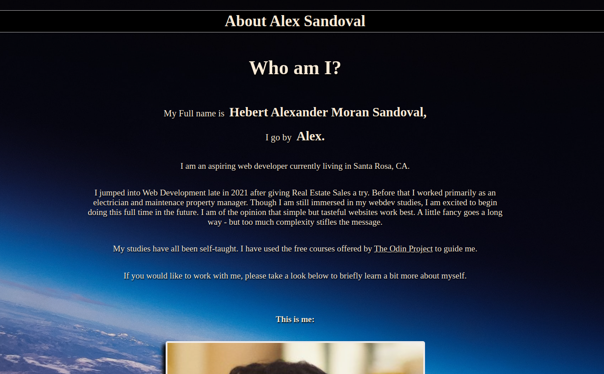

Alex's Web Portfolio
-
CALCULATOR
 My calculator project was less simple than I first thought when starting. What if the user hits the decimal button twice in one number entry? or what if the user hits a different operator right after another? What do i do about negative numbers vs the subtraction sign? This project not only had a bunch of little bugs that needed javascipt to fix, it also pushed me to using objects to keep track and seperate attributes accordingly.
My calculator project was less simple than I first thought when starting. What if the user hits the decimal button twice in one number entry? or what if the user hits a different operator right after another? What do i do about negative numbers vs the subtraction sign? This project not only had a bunch of little bugs that needed javascipt to fix, it also pushed me to using objects to keep track and seperate attributes accordingly.**NOTE: The layout for this application is not mobile friendly at the moment.
Languages used: HTML, CSS, Javascript -
TIC TAC TOE
 This simple tic-tac-toe game was a great excercise in using javascript to process logical sequences. For instance - setting up a CPU to assess what moves are available and then a process to analyze and check for victory. Processing click events on the game board and placing the correct image accordingly was also a satisfying process to learn.
This simple tic-tac-toe game was a great excercise in using javascript to process logical sequences. For instance - setting up a CPU to assess what moves are available and then a process to analyze and check for victory. Processing click events on the game board and placing the correct image accordingly was also a satisfying process to learn.**NOTE: The layout for this application is not mobile friendly at the moment.
Languages used: HTML, CSS, Javascript -
My Personal PagesThe following are the files/code for this page (my web portfolio), as well as my tech-resume, work resume and About Me page on the sticky nav bar at the top of this page.
**All of these pages are mobile friendly.
Languages used: HTML, CSS -
Etch-A-Sketch
 For this etch-a-sketch project I used Javascript to create a dynamic grid that can change in density according to a slider provided for the user on the web page. I then used the "mouseover" event listener to change the appropriate grid according to the style desired by the user.
For this etch-a-sketch project I used Javascript to create a dynamic grid that can change in density according to a slider provided for the user on the web page. I then used the "mouseover" event listener to change the appropriate grid according to the style desired by the user.**NOTE: The layout for this application is not mobile friendly at the moment.
Languages used: HTML, CSS, Javascript -
Library of Alexander
 A library/catalog app of sorts where the user can store and look up favorite books and movies. This project taught me how to take in data from a form and create a new object(entry) in my library with it. I also managed to create a "protal" of sorts that changes when a different options are selected rather than taking you to a whole new page.
A library/catalog app of sorts where the user can store and look up favorite books and movies. This project taught me how to take in data from a form and create a new object(entry) in my library with it. I also managed to create a "protal" of sorts that changes when a different options are selected rather than taking you to a whole new page.**NOTE: The layout for this application is not mobile friendly at the moment.
Languages used: HTML, CSS, Javascript -
Mock Sign Up PageA Mock Sign Up page for a hypothetical hawaiian commune. This project helped me learn how to style forms.
**NOTE: The layout for this application is not mobile friendly at the moment.
Languages used: HTML, CSS